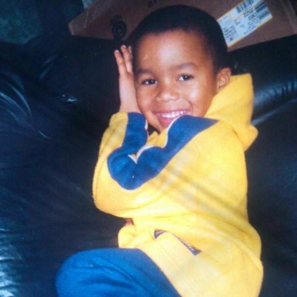

childhood

On February 27th, 1996 at St. Joseph's Hospital in Paterson, New Jersey the kid was born.
I moved to Charlotte, North Carolina at the age of 10.
education
The amount of schools I've attended is crazy. The list below is somewhat accurate.
- Kindergarten at Alexander Hamilton Academy.
hobbies
-
I enjoy taking and sharing pictures of my close friends and family.
-
I like to sing, even though I can't.
-
Is dancing considered a hobby?
life goals
lorem ipsem
image gallery
lorem ipsem